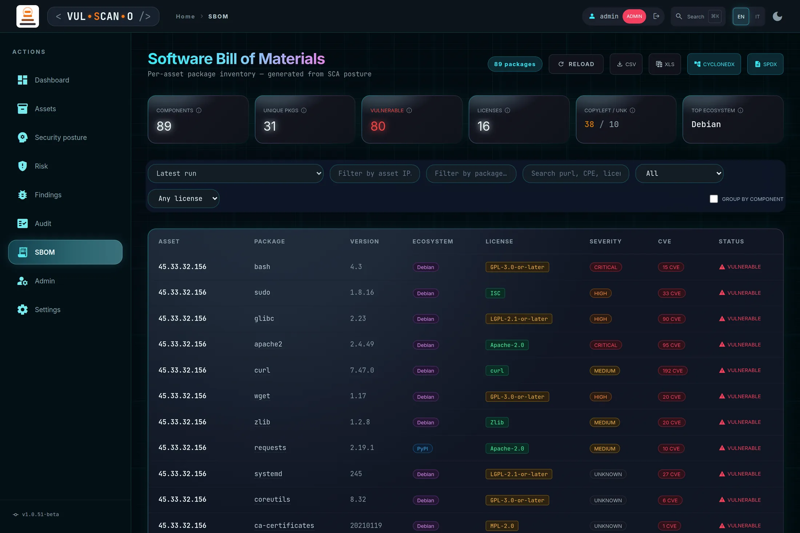
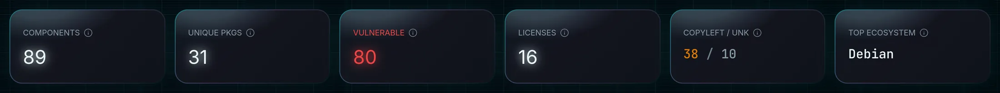
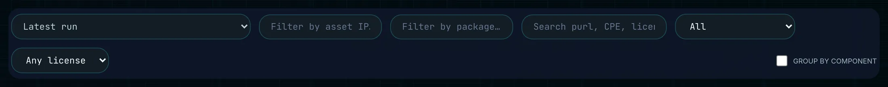
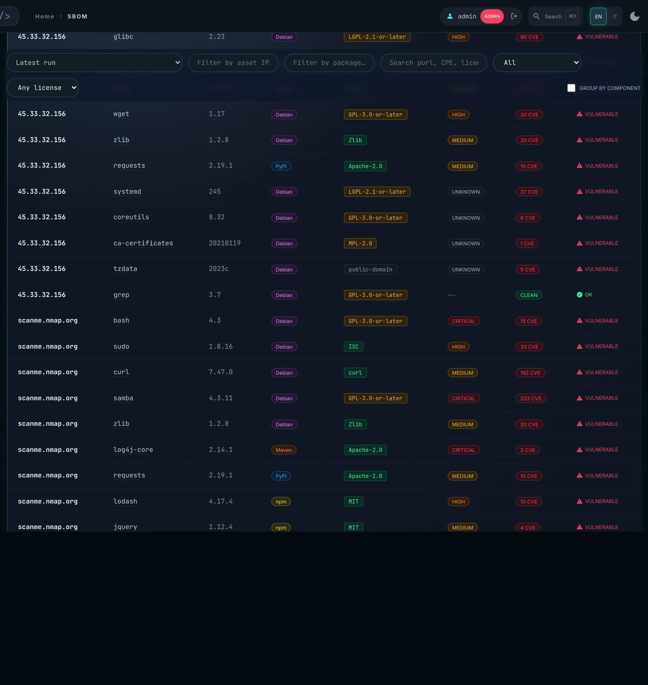
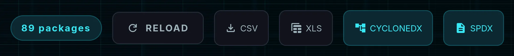

Software Bill of MaterialsSoftware Bill of Materials
The component inventory produced by the latest SCA posture run: every package on every asset, with version, ecosystem, licence and CVE count — and an export that standard tooling can consume.
L'inventario dei componenti prodotto dall'ultima run di postura SCA: ogni pacchetto su ogni asset, con versione, ecosistema, licenza e conteggio CVE — più un export che gli strumenti standard sanno leggere.
Page OverviewPanoramica read: all (cone-scoped) · export: admin, manager, editor, auditorlettura: tutti (limitata al cono) · export: admin, manager, editor, auditor
The subtitle is precise: “Per-asset package inventory — generated from SCA posture.” This page does
not scan anything itself; it presents what the posture run already collected, from
GET /api/sbom. With no posture run yet, it returns an empty set by design.
Il sottotitolo è preciso: «Per-asset package inventory — generated from SCA posture.» Questa pagina
non esegue scansioni: presenta ciò che la run di postura ha già raccolto, tramite
GET /api/sbom. Se non esiste ancora alcuna run, restituisce un insieme vuoto per scelta
progettuale.
Two very different audiences use it. Security asks “are we running the component in today's advisory?” Legal and procurement ask “how many copyleft or unknown-licence components are in production?” The KPI strip is built to answer both without changing page.
La usano due tipi di interlocutori molto diversi. La sicurezza chiede «stiamo usando il componente dell'advisory di oggi?». Legale e acquisti chiedono «quanti componenti copyleft o a licenza ignota abbiamo in produzione?». La striscia KPI è costruita per rispondere a entrambe senza cambiare pagina.

KPI stripStriscia KPI

| KPI | DefinitionDefinizione |
|---|---|
| COMPONENTS | Total component entries in the current view — one per package per asset, after filters. The same library on ten hosts counts ten times.Voci di componente totali nella vista corrente — una per pacchetto per asset, dopo i filtri. La stessa libreria su dieci host conta dieci volte. |
| UNIQUE PKGS | Distinct package + version + ecosystem, deduplicated across all assets. The gap between this and COMPONENTS tells you how homogeneous your fleet is.Combinazioni distinte di pacchetto + versione + ecosistema, deduplicate su tutti gli asset. Il divario rispetto a COMPONENTS indica quanto è omogeneo il tuo parco macchine. |
| VULNERABLE | Components with at least one known CVE (cve_count > 0) in this view.Componenti con almeno un CVE noto (cve_count > 0) in questa vista. |
| LICENSES | Number of distinct licence identifiers seen; NOASSERTION counts as one.Numero di identificativi di licenza distinti; NOASSERTION conta come uno. |
| COPYLEFT / UNK | Two numbers side by side: copyleft components (GPL, AGPL, LGPL, MPL…) and components with an unknown or unstated licence. These are the compliance-risk buckets — the first because of obligations, the second because you cannot assess what you cannot identify.Due numeri affiancati: componenti copyleft (GPL, AGPL, LGPL, MPL…) e componenti con licenza sconosciuta o non dichiarata. Sono i due bucket di rischio conformità — il primo per gli obblighi, il secondo perché non puoi valutare ciò che non riesci a identificare. |
| TOP ECOSYSTEM | The package ecosystem contributing the most components in this view — Debian, PyPI, npm and so on.L'ecosistema di pacchetti che contribuisce con più componenti in questa vista — Debian, PyPI, npm e così via. |
Filters and view controlsFiltri e controlli di vista

| ControlControllo | BehaviourComportamento |
|---|---|
| Run selectorSelettore di run | Defaults to Latest run. Pick an older run to inspect a historical bill of materials — for instance the SBOM as it was at the date of a release you shipped.Predefinito su Latest run. Scegli una run precedente per esaminare una distinta storica dei materiali — per esempio la SBOM alla data di una release rilasciata. |
| Filter by asset IP… | Narrows the view to a single host.Restringe la vista a un singolo host. |
| Filter by package… | Substring match on the package name.Corrispondenza per sottostringa sul nome del pacchetto. |
| Search purl, CPE, licence… | Free-text search across the identifier fields. This is the fastest way to answer “do we have X anywhere?”, because purl and CPE are exactly what advisories quote.Ricerca in testo libero sui campi identificativi. È il modo più rapido per rispondere a «abbiamo X da qualche parte?», perché purl e CPE sono proprio ciò che citano gli advisory. |
| Vulnerability filterFiltro vulnerabilità | All · Vulnerable only · Safe only |
| Licence filterFiltro licenza | Any licence · Copyleft · Permissive · Unknown |
| GROUP BY COMPONENT | Collapses identical package+version rows across hosts into a single line showing how many assets are affected. This is the deduplicated supply-chain view, and the one to use when answering an advisory.Comprime le righe identiche pacchetto+versione dei vari host in un'unica riga che mostra quanti asset sono coinvolti. È la vista deduplicata della supply chain, quella da usare per rispondere a un advisory. |
| Per page and pagerPer pagina e paginatore | A page-size selector plus ‹ PREV / NEXT ›, with “{from}–{to} of {total}” and “Page {p} / {n}”.Un selettore di dimensione pagina più ‹ PREV / NEXT ›, con «{from}–{to} of {total}» e «Page {p} / {n}». |
The component tableLa tabella dei componenti

| ColumnColonna | ContentContenuto |
|---|---|
| ASSET | The host the component was found on. Replaced by an asset count when grouping is on.L'host su cui è stato trovato il componente. Sostituito da un conteggio di asset quando il raggruppamento è attivo. |
| PACKAGE / VERSION | Name and exact installed version.Nome e versione installata esatta. |
| ECOSYSTEM | Debian, PyPI, npm, and so on — the namespace that makes a package name unambiguous.Debian, PyPI, npm e così via — lo spazio dei nomi che rende non ambiguo il nome di un pacchetto. |
| LICENSE | The SPDX identifier where known, otherwise NOASSERTION.L'identificativo SPDX quando noto, altrimenti NOASSERTION. |
| CVE | The number of known vulnerabilities affecting that exact version.Il numero di vulnerabilità note che riguardano esattamente quella versione. |
| SEVERITY | The highest severity among those CVEs.La severità più alta fra quei CVE. |
| STATUS | VULNERABLE when cve_count > 0, otherwise OK; clean components may also carry a CLEAN badge.VULNERABLE quando cve_count > 0, altrimenti OK; i componenti puliti possono anche riportare il badge CLEAN. |
States: Loading… · “No SBOM data. Run a posture scan from the dashboard.” · “Error loading SBOM data.”
Stati: Loading… · «No SBOM data. Run a posture scan from the dashboard.» · «Error loading SBOM data.»
Standard exportExport standard

| ButtonPulsante | Endpoint | ProducesProduce |
|---|---|---|
| CYCLONEDX | GET /api/sbom/export?format=cyclonedx |
CycloneDX 1.5 JSON.JSON CycloneDX 1.5. |
| SPDX | GET /api/sbom/export?format=spdx |
SPDX 2.3 JSON.JSON SPDX 2.3. |
Both documents carry the full metadata set: purl and CPE identifiers, licences, hashes, supplier, dependency relationships and the associated CVEs. That is enough for Dependency-Track or any standard SBOM consumer to ingest the file without manual mapping.
Entrambi i documenti contengono l'insieme completo dei metadati: identificativi purl e CPE, licenze, hash, fornitore, relazioni di dipendenza e i CVE associati. È abbastanza perché Dependency-Track o qualsiasi consumatore SBOM standard acquisisca il file senza mappature manuali.
403. An auditor can export the full file: a CycloneDX/SPDX document is
read-only data and a normal audit deliverable, unlike a scan.
Gli export rispettano il cono di visibilità: il file CycloneDX di un editor contiene solo i componenti
dei suoi asset. Viewer e stakeholder possono consultare la pagina ma non esportare — l'endpoint risponde
403. Un auditor può esportare il file completo: un documento CycloneDX/SPDX è
un dato di sola lettura e un normale deliverable d'audit, a differenza di una scansione.
Procedures and expected outcomesProcedure e risultati attesi
How It Works — answer a supply-chain questionCome funziona — rispondere a una domanda di supply chain
- Run a posture scan from the Dashboard or /intel — without one the page is empty by design.Esegui una scansione di postura dalla Dashboard o da /intel — senza, la pagina è vuota per scelta.
- Open SBOM and type the component name in Search purl, CPE, licence…Apri SBOM e digita il nome del componente in Search purl, CPE, licence…
- Enable GROUP BY COMPONENT — you now get one row per version with the affected asset count.Attiva GROUP BY COMPONENT — ottieni una riga per versione con il numero di asset coinvolti.
- Switch the vulnerability filter to Vulnerable only to see whether those versions actually carry CVEs.Imposta il filtro vulnerabilità su Vulnerable only per vedere se quelle versioni portano davvero dei CVE.
- Press CYCLONEDX and attach the JSON to your answer.Premi CYCLONEDX e allega il JSON alla tua risposta.
How It Works — a licence reviewCome funziona — una revisione delle licenze
- Read the COPYLEFT / UNK KPI first — it frames the size of the problem.Leggi prima il KPI COPYLEFT / UNK — inquadra la dimensione del problema.
- Set the licence filter to Copyleft and export the view.Imposta il filtro licenza su Copyleft ed esporta la vista.
- Set it to Unknown and export again — this is the list somebody has to identify by hand.Impostalo su Unknown ed esporta di nuovo — è l'elenco che qualcuno dovrà identificare a mano.
- Repeat per environment by combining with the asset filter.Ripeti per ambiente combinando con il filtro per asset.
Expected OutcomeRisultato atteso
.json that validates as CycloneDX 1.5 or SPDX 2.3 and imports cleanly into standard
SBOM tooling.
Un inventario di componenti filtrabile in cui ogni riga dichiara licenza ed esposizione a CVE, e un
file .json scaricato che risulta valido come CycloneDX 1.5 o SPDX 2.3 e si importa senza attriti
negli strumenti SBOM standard.